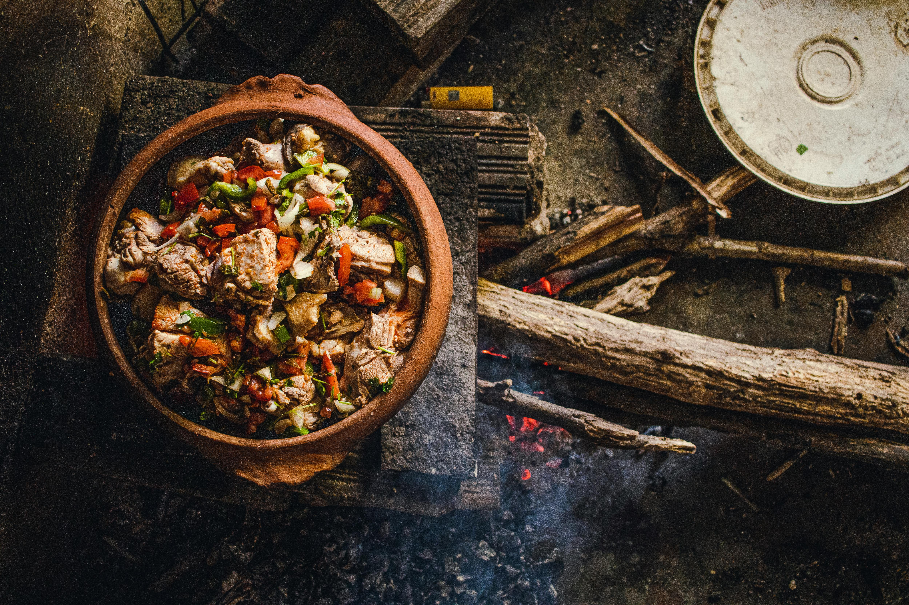

Seco de carne

Description:
A hearty, happy stew that warms the heart! Seco de carne is a slow-cooked beef dish with cilantro sauce, potatoes, and carrots—comfort food with a Peruvian twist!
Ingredients:
- Beef chunks
- Chopped onion
- Garlic
- Cilantro (blended with a bit of water)
- Yellow chili or aji amarillo paste
- Beer or broth
- Potatoes
- Carrots
- Cumin
- Salt and pepper
- Cooked white rice
Steps:
- Brown the beef and set aside
- Sauté onion, garlic, and chili paste
- Add blended cilantro, then return the beef
- Pour in beer or broth, add veggies
- Simmer until tender
- Serve with rice—and good vibes!
Home